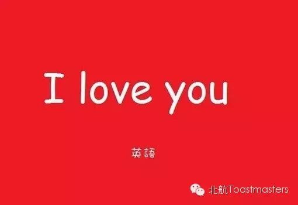

本周Athena Toastmasters女神俱乐部强势助阵北航头马，注定本周五将是一场D2小区的盛宴。
这也是北航头马俱乐部有史以来的第一次中文会议，重重的Mark一下。
情绪管理
主持人：Jerome
即兴演讲主持人：John
每个人都有情绪，但人们大都对情绪缺乏必要的了解和关注。积极的情绪才会激发人们工作的热情和潜力，而消极情绪则需要适时疏导。只有了解了情绪，才能管理并控制情绪，才能发挥其积极作用。工作并快乐着，这是情绪管理的目标，这一次的即兴演讲让我们聊一聊如何驾驭自己的情绪。
中文备稿演讲
Kiki CC3 鬼故事
有些时候的害怕、紧张，都是自己捕风捉影、想象再加上夸大而来的，就像听鬼故事，本来没有那么吓人，而是自己想象中的鬼在吓唬自己罢了。来，听听Kiki绘声绘色的给大家讲鬼故事。
Summers CC3 我爱英语

英语是从初中以来就伴随我们的一门课程，一种语言，一项技能，从小到大，在学习英语的过程中，我们有怎样的酸甜苦辣呢？Summers将跟大家分享他的学英语的经历。
Berrina CC4 瑞德·巴特勒

《飘》，是美国女作家玛格丽特·米切尔的传世佳作。书中讲述了男女主角在美国南北战争时期分分合合的纠缠。书中的男主角瑞德巴特勒有着怎样的故事呢？Berrina跟大家讲述风度帅哥瑞德的故事。
Blair CC9 人生目标的正确打开方式
星爷说，做人没有梦想，跟咸鱼有什么区别？！可有了梦想，也仅仅是充实人生的第一步。有了人生目标，怎样去实现呢？Blair悄悄告诉大家，人生目标的正确打开方式。
Toastmasters International (TI) is a nonprofit educational organization that operates clubs worldwide for the purpose of helping members improve their communication, public speaking, and leadership skills.

https://mp.weixin.qq.com/s/lnn3RkFs9iOxSiKQ8wwJpA
本页为抢救式本地归档，图文已永久保存。